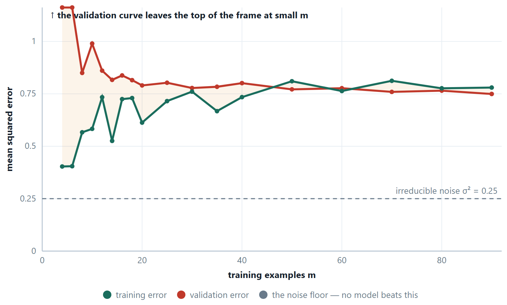
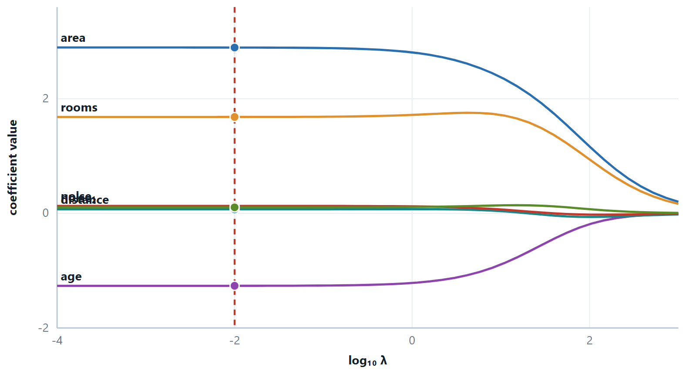
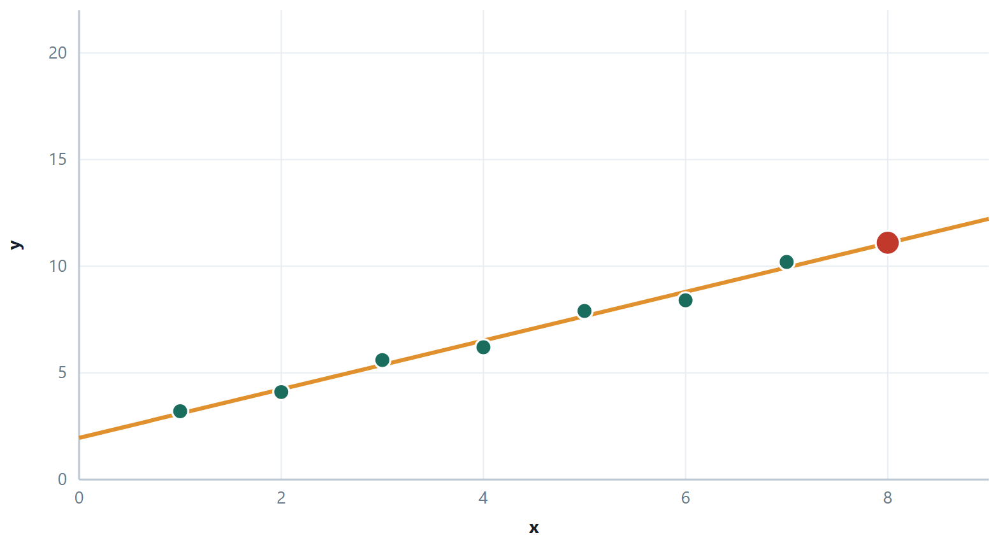
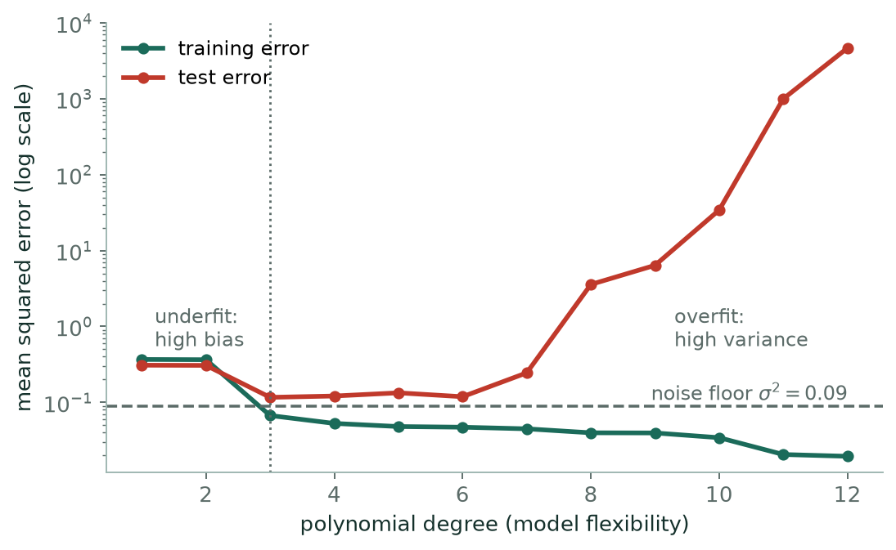

Chapter 5: Overfitting, Regularisation and Regression Metrics¶
Chapter 4 fitted a line by least squares and walked down a cost surface with gradient descent. A line is only the simplest member of a family of models, and the first thing to learn about a family is how it fails. This chapter shows the two failures, underfitting and overfitting, traces them to bias and variance, and introduces the standard remedy, regularisation. It closes with the regression metrics that let you measure a fit honestly, and with the assumptions behind the inference people draw from a fitted line.
5.1 Polynomial regression, and the trouble it brings¶
A straight line through a curve underfits. The remedy is not a new algorithm: add \(x^{2}, x^{3}\) … as extra features and fit the same linear model to them. The model stays linear in the parameters — which is all that “linear regression” requires — while the curve it draws is not.
a cubic in \(x\), but still a plain linear regression on the three features \(x, x^{2}, x^{3}\)
Two practical consequences. The new features are on wildly different scales — if \(x\) reaches 100 then \(x^{3}\) reaches \(10^{6}\) — so scaling becomes essential. And the number of parameters grows quickly, especially with several original features, where degree 2 also brings every interaction term \(x_{i}x_{j}\).
5.2 Bias, variance, and where the error goes¶
Definition: Expected squared error
For a new point, averaged over all the training sets you might have drawn:
expected error \(= \text{bias}^{2} +\) variance + irreducible noise
Bias is the error from wrong assumptions — how far the average model is from the truth. Variance is how much the fitted model moves when you swap one training set for another. Noise is the part no model can remove.
High bias / underfitting
Training error already high, test error about the same. The model is too rigid. Add features, raise the degree, reduce regularisation, use a more flexible family. More data does not help.
High variance / overfitting
Training error low, test error much higher; the gap is the symptom. The model is chasing noise. Get more data, remove features, raise \(\lambda\), stop early, prune.
The two are traded against each other by every knob in this course — the degree, \(\lambda\), the depth of a tree, the \(k\) of k-NN. Turning any of them towards flexibility lowers bias and raises variance. There is a minimum of the sum somewhere in the middle, and finding it is what a validation set is for.
How to tell them apart in practice
Plot the training and validation error against the amount of training data — a learning curve. If both curves flatten out at a high error and meet, you have high bias, and adding data will not move them. If there is a wide gap that is still closing as data is added, you have high variance, and more data will help. The figure below computes both curves for real, so you can try the three cases rather than take this on trust.

Read the shape, not the level. Two curves that have met say the model has extracted everything it can from data of this kind. Whether that is good news depends on where they met: just above the noise floor is success, far above it is high bias. Two curves still separated and converging say the model is data-limited, and the width of the gap is a rough forecast of how much there is left to win.
# the same plot, from the library
from sklearn.model_selection import learning_curve
import numpy as np
sizes, train_scores, val_scores = learning_curve(
model, X, y,
train_sizes=np.linspace(0.1, 1.0, 10),
cv=5, scoring="neg_mean_squared_error")
train_mse = -train_scores.mean(axis=1) # sklearn returns scores, so negate
val_mse = -val_scores.mean(axis=1)
for m, t, v in zip(sizes, train_mse, val_mse):
print(m, round(t, 3), round(v, 3), "gap", round(v - t, 3))
5.3 Regularisation¶
An overfitted curve is a curve with large, opposing coefficients: +4 000 here, −3 800 there, which nearly cancel across most of the range and then swing violently wherever the data is thin. So instead of forbidding flexible models, charge them for it. Add a term to the cost that grows with the size of the coefficients, and the optimiser will only buy a large coefficient if it pays for itself in fit.
ridge — the L2 penalty. The intercept \(\theta _{0}\) is never penalised.
lasso — the L1 penalty

Why only L1 gives exact zeros
Think of the penalty as a budget on the coefficients and picture its boundary. For L2 the budget region is a circle — smooth everywhere — so the point where the fit's contours first touch it is almost never on an axis. For L1 the region is a diamond with corners on the axes, and contours arriving from a general direction touch a corner first. A corner has a coordinate exactly equal to zero. That is the whole geometric argument, and it also explains the behaviour with correlated features: a smooth circle lets two correlated coefficients share, while a diamond's corner picks one and discards the other.
Ridge (L2)
- Penalty \(\lambda \sum \theta ^{2}\)
- Shrinks smoothly; never exactly zero
- Keeps all features
- Handles correlated features by sharing weight between them
- Closed form: \(\theta = (X^{T}X + \lambda I)^{-1}X^{T}y\) — always invertible
- Use when you believe most features matter a little
Lasso (L1)
- Penalty \(\lambda \sum |\theta |\)
- Sets coefficients exactly to zero
- Selects features while fitting
- With correlated features it keeps one arbitrarily and drops the rest
- No closed form — solved by coordinate descent
- Use when you believe most features are irrelevant
Elastic net
- Penalty \(\lambda _{1}\sum |\theta \mid + \lambda _{2}\sum \theta ^{2}\)
- Zeros, but gentler about it
- Keeps correlated groups together instead of picking one
- Two hyper-parameters to tune
- The usual choice when \(n\) is large and features come in correlated groups
Two rules that are always tested
Standardise first — the penalty charges by coefficient size, and a coefficient is large partly because its feature is measured in small units, so an unscaled feature is punished for its units. Never penalise the intercept — \(\theta _{0}\) only sets the overall level of the predictions, and shrinking it towards zero biases every prediction towards zero for no reason.
# ridge and lasso, with the penalty strength chosen by cross-validation
from sklearn.linear_model import RidgeCV, LassoCV
from sklearn.pipeline import make_pipeline
from sklearn.preprocessing import StandardScaler
lambdas = np.logspace(-3, 3, 40) # sklearn calls this parameter alpha
# the scaler must be INSIDE the pipeline: the penalty charges by coefficient
# size, so an unscaled feature would be punished for its units
ridge = make_pipeline(StandardScaler(), RidgeCV(alphas=lambdas, cv=5)).fit(X_tr, y_tr)
lasso = make_pipeline(StandardScaler(), LassoCV(alphas=lambdas, cv=5)).fit(X_tr, y_tr)
print("chosen penalty:", ridge[-1].alpha_, lasso[-1].alpha_)
print("exact zeros:", (ridge[-1].coef_ == 0).sum(),
(lasso[-1].coef_ == 0).sum()) # none, then several
\(\lambda\) is a hyper-parameter, chosen by cross-validation on the training data. \(\lambda = 0\) gives ordinary least squares; \(\lambda \to \infty\) drives every penalised coefficient to zero, leaving a model that predicts \(\bar{y}\) for everything. In bias–variance language: raising \(\lambda\) raises bias and lowers variance, and the best \(\lambda\) is the one that minimises their sum.
5.4 Regression evaluation metrics¶
| Metric | Formula | Units | Character |
|---|---|---|---|
| MSE | \((1/m)\sum (y - \hat{y})^{2}\) | \(y^{2}\), so uninterpretable | heavily penalises large errors; the thing least squares minimises |
| RMSE | \(\sqrt{\text{MSE}}\) | same as \(y\) | the usual number to report; still outlier-sensitive |
| MAE | \((1/m)\sum \|y - \hat{y}\|\) | same as \(y\) | robust; every rupee of error counts the same |
| \(R^{2}\) | \(1 - \text{SS}_{\text{res}}/\text{SS}_{\text{tot}}\) | none | fraction of variance explained, relative to predicting \(\bar{y}\) |
| Adjusted \(R^{2}\) | \(1 - (1-R^{2})(m-1)/(m-n-1)\) | none | \(R^{2}\) with a charge for each extra feature; can fall |
| MAPE | \((100/m)\sum \|(y - \hat{y})/y\|\) | % | scale-free and readable; explodes when \(y\) is near zero |
\(\text{RMSE} \ge \text{MAE}\) always, and the gap between them grows with the spread of the errors. A large gap is itself a diagnostic: it says a few big misses are doing most of the damage, and you should go and look at them.

Definition: Three facts worth stating in an exam
\(R^{2} = 0\) means the model is exactly as good as always predicting \(\bar{y}\). \(R^{2}\) can be negative on a test set, which simply means it is worse than that. \(R^{2}\) never falls when a feature is added, even a column of random numbers — so it cannot be used to compare models of different sizes, which is precisely the job adjusted \(R^{2}\) exists to do.
Estimating the score honestly: holdout and k-fold¶
Every metric above is a number computed on some rows. Which rows decides what the number means. Scoring on the training rows measures memory, not learning, so the score has to come from data the model has not seen — and there are two ways to arrange that.
Definition: Holdout and k-fold cross-validation
Holdout. Split once, typically 70/30 or 80/20. Fit on the training part, score on the test part. One fit, one number.
k-fold cross-validation. Cut the data into \(k\) equal folds. Run \(k\) rounds; in round i, fold i is the test set and the other \(k - 1\) folds are the training set. Report the mean of the \(k\) scores, and their standard deviation. Every row is tested exactly once and trained on \(k - 1\) times. \(k\) fits.
| Holdout | k-fold | |
|---|---|---|
| Models fitted | 1 | \(k\) |
| Rows used for training | 70–80% of them | All of them, across the rounds |
| Rows used for testing | The other 20–30%, once | All of them, each exactly once |
| Variance of the estimate | High — it depends on which rows happened to land in the test set | Low — averaging \(k\) estimates, and you get the spread as well as the mean |
| Cost | Cheapest possible | \(k\) times as much |
| Use when | Data is plentiful, or a fit is very expensive | Nearly always otherwise — and always when tuning a hyper-parameter |
Two variants are worth naming. Leave-one-out is \(k = m\): nearly unbiased, but \(m\) fits and a high-variance estimate, because the \(m\) training sets are almost identical. Stratified k-fold keeps the class proportions inside every fold, and is the correct default for classification — without it a fold of an imbalanced dataset can contain no positives at all, and its score is then meaningless.
Example 5.1: 5-fold on ten points
Problem. Set up 5-fold cross-validation for D1…D10, and say how many rows are used for training and for testing in each round. Then do the same for 1000 samples.
Step 1 — the fold size
Fold size \(= m/k = 10/5 = 2\). Each round therefore trains on \(10 - 2 = 8\) rows and tests on 2.
Step 2 — the five rounds
| Round | Test fold | Training set |
|---|---|---|
| 1 | D1, D2 | D3–D10 |
| 2 | D3, D4 | D1, D2, D5–D10 |
| 3 | D5, D6 | D1–D4, D7–D10 |
| 4 | D7, D8 | D1–D6, D9, D10 |
| 5 | D9, D10 | D1–D8 |
Step 3 — 1000 samples
Fold size \(= 1000/5 = 200\), so each round uses 800 for training and 200 for testing, and five models are fitted in all.
Answer. Each round: 8 train \(/ 2\) test for D1…D10, and 800 train \(/ 200\) test for 1000 samples
The trap that costs the most marks, and the most real accuracy
Every step that learns something from data — the scaler, the imputer, PCA, feature selection, SMOTE — must be refitted inside each fold, on that fold's training part only. Scaling the whole dataset and then cross-validating leaks the test rows into training and reports a score better than the model deserves. Put the steps in a Pipeline and pass the pipeline to cross_val_score; the correct order then happens automatically.
# the only correct way to cross-validate a model that needs scaling
from sklearn.model_selection import KFold, StratifiedKFold, cross_val_score
from sklearn.pipeline import make_pipeline
from sklearn.preprocessing import StandardScaler
pipe = make_pipeline(StandardScaler(), model) # the scaler is refit inside every fold
cv = KFold(n_splits=5, shuffle=True, random_state=42)
s = cross_val_score(pipe, X, y, cv=cv, scoring="neg_mean_squared_error")
print(-s.mean(), s.std()) # report the mean AND the spread — the spread is the honesty
5.5 What linear regression assumes¶
The fit itself needs nothing; the interpretation — confidence intervals, p-values, and the claim that the model will behave the same way on new data — rests on four assumptions, usually remembered as LINE.
- Linearity — the relation really is linear in the parameters. Check: plot residuals against fitted values; a curve in that plot means you have missed a non-linear term.
- Independence — the errors are independent of one another. Time-series data usually violates this, and its residuals will show a pattern in time order.
- Normality of the residuals — needed for inference, not for the fit. Check with a Q–Q plot.
- Equal variance (homoscedasticity) — the spread of the residuals is the same across the range. A funnel shape in the residual plot means the model is more uncertain for large predictions than small ones, and a log transform of \(y\) often fixes it.
The single most useful diagnostic in this unit
is a plot of residuals against fitted values. If the model is right, it looks like a featureless band of noise around zero. Any structure in it — a curve, a funnel, a cluster of points miles from the rest — is the model telling you what it has missed.
5.6 Further topics¶
Basis expansion and interaction terms¶
Powers of \(x\) are only one way of enlarging the feature set. The general idea, called basis expansion, is to replace the input \(x\) by a list of chosen functions of it, \(\phi_{1}(x), \phi_{2}(x), \ldots\), and fit a linear model to those:
The functions can be powers \(x, x^{2}, x^{3}\), a logarithm \(\log x\) for a quantity that grows by multiples, a sine and cosine pair for something that repeats, or the piecewise functions of a spline. Whatever they are, the model is linear in \(\theta\), so the normal equation, gradient descent, ridge and lasso all apply unchanged. Only the design matrix changes, and the choice of basis is where knowledge about the problem enters.
With several original features the expansion can include interaction terms, products such as \(x_{1}x_{2}\). In \(\hat{y} = \theta_{0} + \theta_{1}x_{1} + \theta_{2}x_{2} + \theta_{3}x_{1}x_{2}\) the effect of a unit rise in \(x_{1}\) is \(\theta_{1} + \theta_{3}x_{2}\), so the slope in \(x_{1}\) depends on the level of \(x_{2}\). Without the product term the model forces the effect of each feature to be the same whatever the others do. An interaction between a numeric feature and a dummy variable lets the two groups have different slopes, not only different intercepts.
The cost is the number of columns. All terms up to degree \(d\) in \(n\) original features, apart from the intercept, number \(\binom{n+d}{d} - 1\). For \(n = 3\) and \(d = 2\) that is 9; for \(n = 10\) and \(d = 3\) it is 285; for \(n = 40\) and \(d = 2\) it is 860, more than the 300 rows of a typical small data set. A rich basis therefore calls for the machinery of this chapter: standardise the columns, and use ridge or lasso with \(\lambda\) chosen by cross-validation, so that the extra flexibility is paid for.
Training and test error against model complexity¶
The learning curve earlier in this chapter holds the model fixed and varies the amount of data. The other view holds the data fixed and varies the flexibility, and it is the picture behind the phrase "bias–variance trade-off". The figure shows a real run: 20 training points from \(y = \sin(2\pi x)\) with Gaussian noise of standard deviation \(0.3\), so the irreducible noise is \(\sigma^{2} = 0.09\), fitted by polynomials of degree 1 to 12 and scored on 2000 fresh points.

Read the two curves separately. The training error never rises: each higher degree contains the lower ones as special cases, so the fit can only improve, from \(0.367\) at degree 1 to \(0.020\) at degree 12. The test error is U-shaped. It is high at degrees 1 and 2 (\(0.309\), \(0.307\)), where the curve is too rigid for a sine wave (high bias), lowest at degree 3 (\(0.116\), close to the noise floor of \(0.09\)), and then increases, to \(3.6\) at degree 8 and into the thousands at degree 12 (high variance). Twelve coefficients fitted to 20 noisy points cannot be pinned down, and between and beyond the points the curve swings wildly.
Two details repay attention. The training error at degree 3, \(0.067\), lies below the noise floor \(0.09\): the fit has already absorbed a little of the noise, so training error is optimistic even for the best model. And the sweet spot is found only on data the fit has not seen. Choosing the degree by training error would pick degree 12; choosing it by test or cross-validation error picks 3. The exact values depend on the random sample drawn, the shape does not.
How the lasso is solved: soft thresholding¶
The chapter says that the lasso has no closed form and is solved by coordinate descent. The idea is simple enough to state in full. Cycle through the coefficients, and at each one hold the others fixed and minimise the cost over that single coefficient. That one-variable problem does have an answer.
Let \(r_{i}\) be the partial residual, the part of \(y_{i}\) not explained by the other coefficients, and let \(x_{ij}\) be the standardised values of feature \(j\). Minimising \(\sum_{i}(r_{i} - \theta_{j}x_{ij})^{2} + \lambda|\theta_{j}|\) over \(\theta_{j}\) gives
The function \(S\) is the soft threshold: it shrinks \(z\) towards zero by \(t\) and returns exactly zero if \(|z| \le t\). The numerator \(\sum x_{ij}r_{i}\) measures how strongly feature \(j\) correlates with what is left unexplained. If that is smaller than \(\lambda/2\) the feature is not worth its penalty and its coefficient is set to zero; if not, the coefficient is the least-squares value reduced by a fixed amount.
The one-variable lasso in the worked example of this chapter is the special case with a single feature, where \(\sum xy = 31\) and \(\sum x^{2} = 14\). At \(\lambda = 10\) the formula gives \((31 - 5)/14 = 1.857\), and the coefficient becomes zero from \(\lambda = 62\) onward. With many features the cycle is repeated, each coefficient being updated with the current partial residual, until no coefficient changes by more than a small tolerance. Because the cost is convex, this converges to the global minimum. The ridge update, by contrast, divides by \(\sum x_{ij}^{2} + \lambda\) and never returns exactly zero.
5.7 Worked examples¶
The examples below work through the calculations of this chapter in full. Try each one on paper before reading the steps.
Example 5.2: Every metric, from five predictions
Problem. Actual \(y = 3, -0.5, 2, 7, 4.2\) with predictions \(\hat{y} = 2.5, 0.0, 2, 8, 4.0\). Compute MSE, RMSE, MAE and \(R^{2}\).
Step 1 — errors, one row at a time
| \(y\) | \(\hat{y}\) | \(e\) | \(e^{2}\) | |e| |
|---|---|---|---|---|
| 3 | 2.5 | 0.5 | 0.25 | 0.5 |
| −0.5 | 0.0 | −0.5 | 0.25 | 0.5 |
| 2 | 2 | 0 | 0 | 0 |
| 7 | 8 | −1 | 1 | 1 |
| 4.2 | 4.0 | 0.2 | 0.04 | 0.2 |
| \(\sum\) | 1.54 | 2.2 |
Step 2 — MSE, RMSE, MAE
\(\text{MSE} = 1.54/5 = 0.308;\quad \text{RMSE} = \sqrt{0.308} = 0.555;\quad \text{MAE} = 2.2/5 = 0.44\)
\(\text{RMSE} > \text{MAE}\), as it must be. The gap comes almost entirely from the single error of −1.
Step 3 — \(R^{2}\)
\(\bar{y} = (3 - 0.5 + 2 + 7 + 4.2)/5 = 15.7/5 = 3.14\)
deviations from the mean: −0.14, −3.64, −1.14, 3.86, 1.06
\(\text{SS}_{\text{tot}} = 0.0196 + 13.25 + 1.30 + 14.90 + 1.12 = 30.59\)
\(\text{SS}_{\text{res}} = 1.54\)
\(R^{2} = 1 - 1.54/30.59 = 1 - 0.0503 = 0.9497\)
Answer. MSE 0.308; RMSE 0.555; MAE 0.44; \(R^{2}\) 0.950
Comment. \(R^{2} = 0.95\) means the model removed 95% of the variance that predicting the mean would have left. Note that \(R^{2}\) is computed against \(\bar{y}\) of this set. So an \(R^{2}\) from a narrow slice of data is not comparable with one from a wide slice — and that is why RMSE, in the units of \(y\), is often the more honest number to quote.
Example 5.3: Choose \(\lambda\) without cheating
Problem. Ridge regression on 500 examples with 40 features. For \(\lambda = 0, 0.1, 1, 10, 100\) the training MSE is 2.1, 2.2, 2.6, 4.0, 9.5 and the validation MSE is 6.8, 5.1, 3.9, 4.4, 9.6. Which \(\lambda\), and what does the pattern show?
Step 1 — read the training column
It rises monotonically with \(\lambda\), and it must: \(\lambda = 0\) is unconstrained least squares, which by definition achieves the lowest possible training error. Every positive \(\lambda\) buys something else at the cost of fit. The training column can therefore never be used to choose \(\lambda\) — it would always answer 0.
Step 2 — read the validation column
\(6.8 \to 5.1 \to 3.9 \to 4.4 \to 9.6\). It falls, reaches a minimum at \(\lambda = 1\), and rises again. Choose \(\lambda = 1\).
Step 3 — what the U-shape means
Left of the minimum: training error low, validation error high — a wide gap, so overfitting, high variance. The penalty is too weak.
Right of the minimum: both errors high together — underfitting, high bias. The penalty has crushed the coefficients and the model can no longer represent the data.
The minimum is where \(\text{bias}^{2} +\) variance is smallest. This U-shape is the bias–variance trade-off made visible, and you will see the same curve again for tree depth in Unit 4 and for \(k\) in k-NN.
Step 4 — finish properly
Refit on training + validation together at \(\lambda = 1\), then report the error once on the untouched test set. The validation number 3.9 is not the final result — it was used to make a choice, so it is optimistic.
Answer. \(\lambda = 1\). Small \(\lambda\) overfits, large \(\lambda\) underfits, and only the validation curve can find the middle.
The first example diagnoses three models from their errors, the next two work through loss functions and \(R^{2}\), the fourth follows ridge and lasso in one variable, and the last uses cross-validation to choose between two models.
Example 5.4: Underfit, good fit and overfit, from the numbers alone
Problem. Three models are fitted to the same five training points and then scored on five test points.
| \(x\) | 1 | 2 | 3 | 4 | 5 | |
|---|---|---|---|---|---|---|
| train | \(y\) | 3 | 5 | 6 | 9 | 11 |
| \(x\) | 1.5 | 2.5 | 3.5 | 4.5 | 6 | |
|---|---|---|---|---|---|---|
| test | \(y\) | 4.0 | 6.0 | 7.5 | 10.0 | 13.5 |
Model A: \(\hat{y} = 6.8\). Model B: \(\hat{y} = 2x + 0.8\). Model C: \(\hat{y} = -0.25x^{4} + 3x^{3} - 12.25x^{2} + 21.5x - 9\). Compute the training and test MSE of each model, and classify each as underfitting, a good fit or overfitting.
Step 1 — training errors
| \(x\) | \(y\) | A: \(\hat{y}\) | \(e^{2}\) | B: \(\hat{y}\) | \(e^{2}\) | C: \(\hat{y}\) | \(e^{2}\) |
|---|---|---|---|---|---|---|---|
| 1 | 3 | 6.8 | 14.44 | 2.8 | 0.04 | 3 | 0 |
| 2 | 5 | 6.8 | 3.24 | 4.8 | 0.04 | 5 | 0 |
| 3 | 6 | 6.8 | 0.64 | 6.8 | 0.64 | 6 | 0 |
| 4 | 9 | 6.8 | 4.84 | 8.8 | 0.04 | 9 | 0 |
| 5 | 11 | 6.8 | 17.64 | 10.8 | 0.04 | 11 | 0 |
| \(\sum\) | 40.80 | 0.80 | 0 |
Training MSE: A \(= 40.8/5 = 8.16\); B \(= 0.8/5 = 0.16\); C \(= 0\).
Step 2 — test errors
| \(x\) | \(y\) | A: \(\hat{y}\) | \(e^{2}\) | B: \(\hat{y}\) | \(e^{2}\) | C: \(\hat{y}\) | \(e^{2}\) |
|---|---|---|---|---|---|---|---|
| 1.5 | 4.0 | 6.8 | 7.84 | 3.8 | 0.04 | 4.5469 | 0.2991 |
| 2.5 | 6.0 | 6.8 | 0.64 | 5.8 | 0.04 | 5.2969 | 0.4944 |
| 3.5 | 7.5 | 6.8 | 0.49 | 7.8 | 0.09 | 7.2969 | 0.0413 |
| 4.5 | 10.0 | 6.8 | 10.24 | 9.8 | 0.04 | 10.5469 | 0.2991 |
| 6 | 13.5 | 6.8 | 44.89 | 12.8 | 0.49 | 3.0000 | 110.2500 |
| \(\sum\) | 64.10 | 0.70 | 111.3838 |
Test MSE: A \(= 64.10/5 = 12.82\); B \(= 0.70/5 = 0.14\); C \(= 111.3838/5 = 22.28\).
Step 3 — put the six numbers side by side
| Model | Train MSE | Test MSE | Verdict |
|---|---|---|---|
| A | 8.16 | 12.82 | underfit: poor on both sets, high bias |
| B | 0.16 | 0.14 | good fit: low on both, no gap |
| C | 0.00 | 22.28 | overfit: perfect on training, poor on test, high variance |
Answer. A underfits, B is the good fit and the one to keep, C overfits.
Comment. Model A ignores \(x\) altogether (6.8 is the mean of the training \(y\)), so it cannot track the trend however much data it sees. Model C has five coefficients for five points and passes through every one of them; between the points it wobbles, and at \(x = 6\), outside the training range, it predicts 3.0 where the truth is 13.5. Notice that B's test error is even a little below its training error, which can happen by chance with five test points: the sign of a good fit is the absence of a gap, not a particular ordering. Model A's test \(R^{2}\) is also instructive: the test points have mean 8.2 and \(\text{SS}_{\text{tot}} = 54.3\), so \(R^{2} = 1 - 64.1/54.3 = -0.18\), worse than predicting the mean of the test set; for B it is \(0.987\).
Example 5.5: MSE, MAE and Huber loss, and what one outlier does
Problem. A model gives these predictions.
| \(y\) | 3 | 5 | 7 | 9 | 11 |
|---|---|---|---|---|---|
| \(\hat{y}\) | 2.5 | 5.5 | 8.0 | 8.5 | 12.0 |
Compute SSE, MSE, the cost \(J = (1/2m)\sum(\hat{y} - y)^{2}\), MAE and the mean Huber loss with \(\delta = 1\), where one point costs \(\frac{1}{2}e^{2}\) if \(|e| \le \delta\) and \(\delta(|e| - \frac{1}{2}\delta)\) otherwise. Then change the last prediction from 12 to 16 and see which measure reacts most.
Step 1 — the errors
| \(y\) | \(\hat{y}\) | \(e = \hat{y} - y\) | \(e^{2}\) | \(\|e\|\) | Huber |
|---|---|---|---|---|---|
| 3 | 2.5 | −0.5 | 0.25 | 0.5 | 0.125 |
| 5 | 5.5 | 0.5 | 0.25 | 0.5 | 0.125 |
| 7 | 8.0 | 1.0 | 1.00 | 1.0 | 0.500 |
| 9 | 8.5 | −0.5 | 0.25 | 0.5 | 0.125 |
| 11 | 12.0 | 1.0 | 1.00 | 1.0 | 0.500 |
| \(\sum\) | 2.75 | 3.5 | 1.375 |
Every \(|e| \le 1\), so the quadratic branch \(\frac{1}{2}e^{2}\) of the Huber loss applies to all five points.
Step 2 — the five measures
\(\text{SSE} = 2.75, \quad \text{MSE} = 2.75/5 = 0.55, \quad J = 2.75/10 = 0.275\)
\(\text{MAE} = 3.5/5 = 0.70, \quad \text{mean Huber} = 1.375/5 = 0.275\)
Step 3 — the outlier
Now take \(\hat{y} = 16\) for the last point, so its error is \(e = 5\). Its squared error is \(25\), its absolute error \(5\), and, since \(|e| > 1\), its Huber loss is \(1 \cdot (5 - 0.5) = 4.5\). The other four points are unchanged.
\(\text{SSE} = 1.75 + 25 = 26.75, \quad \text{MSE} = 5.35, \quad J = 2.675\)
\(\text{MAE} = (2.5 + 5)/5 = 1.5, \quad \text{mean Huber} = (0.875 + 4.5)/5 = 1.075\)
Step 4 — compare the reactions
| Measure | Before | After | Grows by a factor of |
|---|---|---|---|
| MSE | 0.55 | 5.35 | 9.7 |
| Mean Huber (\(\delta = 1\)) | 0.275 | 1.075 | 3.9 |
| MAE | 0.70 | 1.50 | 2.1 |
Answer. SSE \(= 2.75\), MSE \(= 0.55\), \(J = 0.275\), MAE \(= 0.70\), mean Huber \(= 0.275\). MSE is the most sensitive to the outlier, MAE the least, and Huber lies between them.
Comment. After the change the one bad point accounts for \(25/26.75 = 93\%\) of the squared error but only \(5/7.5 = 67\%\) of the absolute error: squaring lets a single point dominate. Huber loss squares small errors, which keeps its gradient smooth near zero, and charges only linearly for large ones, so one wild point cannot take over the fit. That is why it is the usual compromise when the data may contain outliers. In the first part the mean Huber loss equals \(J\) only because no error exceeded \(\delta\).
Example 5.6: \(R^{2}\), and the adjusted \(R^{2}\) that charges for extra features
Problem. Five test observations have actual values \(y = 10, 12, 15, 18, 20\) and predictions \(\hat{y} = 11, 13, 14, 17, 21\). Compute MSE, RMSE and \(R^{2}\) and interpret \(R^{2}\). Then, taking this model to have one feature, compute the adjusted \(R^{2}\).
Step 1 — residuals
\(\bar{y} = 75/5 = 15\)
| \(y\) | \(\hat{y}\) | \(e = \hat{y} - y\) | \(e^{2}\) | \(y - \bar{y}\) | \((y-\bar{y})^{2}\) |
|---|---|---|---|---|---|
| 10 | 11 | 1 | 1 | −5 | 25 |
| 12 | 13 | 1 | 1 | −3 | 9 |
| 15 | 14 | −1 | 1 | 0 | 0 |
| 18 | 17 | −1 | 1 | 3 | 9 |
| 20 | 21 | 1 | 1 | 5 | 25 |
| \(\sum\) | 5 | 0 | 68 |
Step 2 — the three measures
\(\text{MSE} = 5/5 = 1, \qquad \text{RMSE} = \sqrt{1} = 1, \qquad R^{2} = 1 - 5/68 = 63/68 = 0.9265\)
RMSE \(= 1\) is in the units of \(y\): the typical prediction is about one unit off, against values that run from 10 to 20. \(R^{2} = 0.9265\) says the model removes 92.65% of the variation that predicting \(\bar{y}\) would leave, so 7.35% is unexplained.
Step 3 — adjusted \(R^{2}\)
With \(m = 5\) observations and \(n = 1\) feature:
\(R^{2}_{\text{adj}} = 1 - (1 - R^{2})\dfrac{m - 1}{m - n - 1} = 1 - 0.0735 \times \dfrac{4}{3} = 1 - 0.0980 = 0.9020\)
Step 4 — what the charge does
Suppose a second feature were added that was worthless and nudged \(R^{2}\) up to \(0.93\). Now \(n = 2\) and \((m - 1)/(m - n - 1) = 4/2 = 2\), so \(R^{2}_{\text{adj}} = 1 - 0.07 \times 2 = 0.86\). The adjusted figure falls from \(0.902\) to \(0.86\) even though \(R^{2}\) rose, which says the feature did not earn its place.
Answer. MSE \(= 1\), RMSE \(= 1\), \(R^{2} = 0.9265\), \(R^{2}_{\text{adj}} = 0.902\).
Comment. The charge is heavy here only because \(m\) is tiny: the factor \((m-1)/(m-n-1)\) is \(2\) for \(m = 5, n = 2\) but about \(1.02\) for \(m = 100, n = 2\). With few rows every extra feature is expensive, which is the correct warning.
Example 5.7: Ridge shrinks, lasso switches off
Problem. The model \(y = wx\) (no intercept) is fitted to the data below with a penalty on \(w\).
| \(x\) | 1 | 2 | 3 |
|---|---|---|---|
| \(y\) | 2 | 4 | 7 |
(a) With the ridge cost \(\sum(y - wx)^{2} + \lambda w^{2}\) find \(w\) for \(\lambda = 0, 2, 10, 100\). (b) Do the same for the lasso cost \(\sum(y - wx)^{2} + \lambda|w|\). (c) For a trained model with \(w = (2, -3, 0.5, 0)\) and residual sum of squares \(20\), compute both penalised costs at \(\lambda = 2\).
Step 1 — the two sums
\(\sum xy = 2 + 8 + 21 = 31, \qquad \sum x^{2} = 1 + 4 + 9 = 14\)
Step 2 — (a) ridge
Differentiate the ridge cost: \(-2\sum x(y - wx) + 2\lambda w = 0\), so \((\sum x^{2} + \lambda)w = \sum xy\) and
\(w = \dfrac{31}{14 + \lambda}\)
Step 3 — (b) lasso
For \(w > 0\) the derivative of the lasso cost is \(-2(31 - 14w) + \lambda\), which is zero at \(w = (31 - \lambda/2)/14\). That is positive only while \(\lambda/2 < 31\), that is \(\lambda < 62\); for larger \(\lambda\) the penalty's pull is stronger than the data's push even at \(w = 0\), and the minimum sits exactly at \(w = 0\).
Step 4 — the table
| \(\lambda\) | ridge \(w\) | lasso \(w\) |
|---|---|---|
| 0 | \(31/14 = 2.2143\) | \(31/14 = 2.2143\) |
| 2 | \(31/16 = 1.9375\) | \(30/14 = 2.1429\) |
| 10 | \(31/24 = 1.2917\) | \(26/14 = 1.8571\) |
| 100 | \(31/114 = 0.2719\) | \(0\) |
Step 5 — (c) the penalised costs
\(\sum w_{j}^{2} = 4 + 9 + 0.25 + 0 = 13.25\), so ridge \(J = 20 + 2(13.25) = 46.5\).
\(\sum |w_{j}| = 2 + 3 + 0.5 + 0 = 5.5\), so lasso \(J = 20 + 2(5.5) = 31.0\).
Answer. Ridge: \(w = 2.2143, 1.9375, 1.2917, 0.2719\). Lasso: \(w = 2.2143, 2.1429, 1.8571, 0\). Penalised costs: ridge \(46.5\), lasso \(31.0\). Only the lasso penalty produces an exact zero.
Comment. Compare the denominators. The ridge denominator \(14 + \lambda\) grows with \(\lambda\) but never makes \(w\) zero; it shrinks the estimate by a proportional factor, \(14/(14 + \lambda)\). The lasso takes a fixed amount, \(\lambda/28\), off the estimate regardless of its size, so a small coefficient is pushed all the way to zero. Equivalently, the ridge penalty's gradient \(2\lambda w\) vanishes as \(w \to 0\) while the lasso's, of size \(\lambda\), does not. Both estimates also confirm that raising \(\lambda\) trades bias for variance: the fit to the training data gets worse at every step down the table.
Example 5.8: Leave-one-out cross-validation chooses between a line and a constant
Problem. The five points \((1, 2), (2, 4), (3, 5), (4, 4), (5, 5)\) are to be described either by a constant (predict the mean of \(y\)) or by a least-squares line. Use leave-one-out cross-validation to decide which model to prefer.
Step 1 — the procedure
Leave-one-out is \(k\)-fold with \(k = m = 5\). In round \(i\), remove point \(i\), fit both models to the other four points, predict the removed point, and record the squared error. The score is the mean over the five rounds.
Step 2 — the five rounds
| Left out | Constant \(=\) mean of other four | Squared error | Line fitted to other four | Prediction | Squared error |
|---|---|---|---|---|---|
| \((1, 2)\) | 4.50 | 6.2500 | \(3.8 + 0.2x\) | 4.0000 | 4.0000 |
| \((2, 4)\) | 4.00 | 0.0000 | \(1.7714 + 0.6857x\) | 3.1429 | 0.7347 |
| \((3, 5)\) | 3.75 | 1.5625 | \(1.95 + 0.6x\) | 3.7500 | 1.5625 |
| \((4, 4)\) | 4.00 | 0.0000 | \(2.1143 + 0.6857x\) | 4.8571 | 0.7347 |
| \((5, 5)\) | 3.75 | 1.5625 | \(2.0 + 0.7x\) | 5.5000 | 0.2500 |
| \(\sum\) | 9.3750 | 7.2819 |
For example, leaving out \((1, 2)\) leaves \((2, 4), (3, 5), (4, 4), (5, 5)\) with \(\bar{x} = 3.5, \bar{y} = 4.5\), \(\sum(x-\bar{x})(y-\bar{y}) = 1.0\) and \(\sum(x-\bar{x})^{2} = 5\), so the slope is \(0.2\) and the intercept \(4.5 - 0.7 = 3.8\).
Step 3 — the cross-validated errors
\(\text{CV}_{\text{constant}} = 9.375/5 = 1.875, \qquad \text{CV}_{\text{line}} = 7.2819/5 = 1.4564\)
Answer. Prefer the line: its leave-one-out MSE is \(1.456\) against \(1.875\) for the constant.
Comment. Compare these with the errors on the training data, which are \(1.2\) for the constant (the variance of \(y\)) and \(0.48\) for the line. The honest error of the line is about three times its training error (\(1.456\) against \(0.48\)), and the training errors would have exaggerated the line's advantage as \(2.5\) to \(1\) where the cross-validated ratio is only \(1.3\) to \(1\). This is the reason a model, a degree or a \(\lambda\) is always chosen on held-out scores, never on training scores. The same recipe, with a column of polynomial features or a value of \(\lambda\) in place of "constant" and "line", is how the degree and the penalty strength are selected in practice.
5.8 Common mistakes to avoid¶
Each of the following is a mistake that costs marks in an examination or accuracy in practice.
- Do not penalise the intercept.
- Do not regularise without standardising first.
- Do not choose \(\lambda\), or the polynomial degree, by looking at training error. It always prefers the most flexible model.
- Do not report \(R^{2}\) without saying which set it was computed on, and do not use it to compare models with different numbers of features — that is what adjusted \(R^{2}\) is for.
5.9 Summary¶
After working through this chapter you should be able to do the following.
- Build polynomial features, watch the training error fall while the test error turns round, and explain overfitting as a relationship between capacity, data and noise rather than a property of a model.
- Decompose expected error into \(\text{bias}^{2}\), variance and noise, read a learning curve to tell which one dominates, and know that more data cures one and not the other.
- Apply ridge and lasso, explain from the geometry of a circle and a diamond why only one of them yields exact zeros, and choose \(\lambda\) by cross-validation with the test set still sealed.
- Compute MSE, RMSE, \(\text{MAE}, R^{2}\), adjusted \(R^{2}\) and MAPE, argue for one from what a mistake costs, and read a residual plot for the structure the model missed.
5.10 Exercises¶
-
Actual 10, 20, 30, 40; predicted 12, 18, 33, 37. Compute MSE, RMSE, MAE and \(R^{2}\).
Answer
The errors \(y - \hat{y}\) are \(-2, 2, -3, 3\), so \(\text{SS}_{\text{res}} = 4 + 4 + 9 + 9 = 26\) and \(\sum|e| = 10\). \(\text{MSE} = 26/4 = 6.5\); \(\text{RMSE} = \sqrt{6.5} = 2.550\); \(\text{MAE} = 10/4 = 2.5\). With \(\bar{y} = 25\), \(\text{SS}_{\text{tot}} = 225 + 25 + 25 + 225 = 500\), so \(R^{2} = 1 - 26/500 = 0.948\).
-
Adding a column of random numbers raises \(R^{2}\) from 0.800 to 0.802 on a model with \(m = 100\), \(n\) going from 5 to 6. Compute both adjusted \(R^{2}\) values and say which model you prefer. Then say roughly how large a rise in \(R^{2}\) a useless feature can be expected to buy, and check that 0.002 is about that size.
Answer
\(R^{2}_{\text{adj}} = 1 - (1 - R^{2})(m-1)/(m-n-1)\). For \(n = 5\): \(1 - 0.200 \times 99/94 = 0.7894\). For \(n = 6\): \(1 - 0.198 \times 99/93 = 0.7892\). Adjusted \(R^{2}\) falls, so keep the smaller model. Setting the two adjusted values equal gives the break-even rise \(R^{2}_{\text{new}} - R^{2}_{\text{old}} = (1 - R^{2}_{\text{old}})/(m - n - 1)\), and this is also about what a feature of pure noise buys on average. Here it is \(0.200/94 = 0.0021\), and the actual rise of \(0.002\) is a little below it: the new feature is no better than noise.
-
A model has training MSE 0.9 and test MSE 8.4. Name the problem and give three distinct remedies.
Answer
Overfitting (high variance): the test error is nine times the training error, and the gap is the symptom. Remedies, any three: collect more training data; remove features or lower the polynomial degree or tree depth; add or strengthen regularisation (raise \(\lambda\) for ridge or lasso); stop training earlier; prune a tree. Whichever is chosen, select it by validation or cross-validation, not by training error. More data helps this problem; for the opposite problem (high bias) it would not.
-
Explain, using the shape of the L1 and L2 penalty regions, why lasso produces exact zeros and ridge does not.
Answer
Regularised least squares minimises the data-fit term while keeping the coefficients inside a budget region: \(|\theta_{1}| + |\theta_{2}| \le t\) for the L1 penalty and \(\theta_{1}^{2} + \theta_{2}^{2} \le t\) for the L2 penalty. The solution is where the elliptical contours of the fit first touch the region. The L2 region is a circle, smooth everywhere, so contours arriving from a general direction touch it at a point where neither coordinate is zero. The L1 region is a diamond with its corners on the axes, and contours arriving from a general direction touch a corner first; at a corner one coordinate is exactly zero. In higher dimensions the diamond has corners and edges lying in the coordinate subspaces, so several coefficients can be zero together. The same fact appears in the gradients: the ridge penalty's gradient \(2\lambda\theta_{j}\) shrinks to zero as \(\theta_{j} \to 0\), so the pull weakens and \(\theta_{j}\) glides towards zero without reaching it, while the lasso penalty pulls with constant force \(\lambda\) however small \(\theta_{j}\) is.
-
You are predicting delivery time in minutes and a late delivery is far worse than an early one. Which metric would you optimise, and why is neither RMSE nor MAE quite right?
Answer
RMSE and MAE are both symmetric: an error of \(+10\) minutes costs exactly the same as \(-10\), which is not what the business wants. What is needed is an asymmetric loss, one that charges more for under-predicting the time than for over-predicting it. For example, with \(e = y - \hat{y}\), charge \(c_{\text{late}} \cdot e\) when \(e > 0\) (the delivery took longer than predicted) and \(c_{\text{early}} \cdot |e|\) otherwise, with \(c_{\text{late}} > c_{\text{early}}\), say 3 to 1. This is a weighted absolute error, the pinball or quantile loss, and minimising it makes the model predict a high quantile of the delivery time rather than the average, which is exactly a cautious estimate. Squared-error training and RMSE would aim at the mean, which is late about half the time. It is also sensible to report the fraction of deliveries that were late.
-
Decide in each case what to report and what the figures suggest. (a) A colleague fits a degree-15 polynomial and boasts of \(R^{2} = 0.999\) on the training data; what should make you sceptical, and what would you ask to see? (b) Model A has \(R^{2} = 0.30\) on test data. Model B has \(R^{2} = 0.95\) on the training data but \(0.40\) on the test data. (c) Two share-price models have \(R^{2} = 0.67\) (X) and \(0.97\) (Y).
Answer
(a) A near-perfect training \(R^{2}\) is the signature of overfitting: with 16 coefficients the curve can chase the noise. Training \(R^{2}\) can never fall as features or degrees are added, so it cannot be evidence of generalisation. Ask for the \(R^{2}\) (or RMSE) on a held-out test set or from cross-validation. (b) Report the test figures, because they estimate performance on new data: A \(= 0.30\), B \(= 0.40\). B explains 95% of the training variance but 40% of the test variance; the large gap signals overfitting, which regularisation, fewer features or more data should address. A is modest but honest, with no gap. (c) Y fits better if both figures are computed on the same data and the same target, but that is not enough to prefer it. If they are training figures, Y may simply be the more flexible model, and adjusted or held-out \(R^{2}\) is the fair comparison. And a very high \(R^{2}\) for share prices should itself prompt a check for leakage, for example a feature that already contains tomorrow's price.
-
A student standardises all the features using the mean and standard deviation of the entire dataset, then splits into training and test sets, fits a lasso, and reports an excellent test \(R^{2}\). Identify the methodological error, its consequence, and the correct procedure.
Answer
The error is data leakage: the scaling parameters were computed using the test rows, so information about the test set has already reached the training stage. The consequence is a test score that is optimistically biased and does not represent performance on genuinely unseen data. The correct procedure is to split first, fit the scaler (and any other learned preprocessing step) on the training part only, transform the test part with those training values, and fit the lasso on the scaled training data. In cross-validation the scaler must be refitted inside every fold; putting the scaler and the model in one
Pipelineguarantees that. -
A model predicts \(\hat{y} = (2, 4, 5, 8)\) for actual \(y = (3, 4, 6, 7)\). Compute MSE, RMSE, MAE and \(R^{2}\), showing \(\text{SS}_{\text{res}}\) and \(\text{SS}_{\text{tot}}\). Is RMSE above MAE, and what does that indicate?
Answer
The errors \(y - \hat{y}\) are \(1, 0, 1, -1\), so \(\text{SS}_{\text{res}} = 1 + 0 + 1 + 1 = 3\) and \(\sum|e| = 3\). \(\text{MSE} = 3/4 = 0.75\), \(\text{RMSE} = \sqrt{0.75} = 0.866\), \(\text{MAE} = 3/4 = 0.75\). \(\bar{y} = 5\), so \(\text{SS}_{\text{tot}} = 4 + 1 + 1 + 4 = 10\) and \(R^{2} = 1 - 3/10 = 0.70\). RMSE \(= 0.866\) is above MAE \(= 0.75\), as it must be (RMSE is never below MAE). The gap is small because the nonzero errors are all the same size; it would be large if a few errors dominated.
-
In 5-fold cross-validation the validation MSE of the five folds is \(6, 8, 7, 9, 5\). What is the reported score, and what spread should accompany it? Give one advantage of \(k\)-fold over a single train/test split, and explain how you would use it to choose \(\lambda\) from the grid \(\{0.01, 0.1, 1, 10, 100\}\).
Answer
The score is the mean: \((6 + 8 + 7 + 9 + 5)/5 = 7\). The sample standard deviation is \(\sqrt{(1 + 1 + 0 + 4 + 4)/4} = \sqrt{2.5} = 1.58\), and a score is best reported as \(7.0 \pm 1.6\). The advantage: every row is used for both training and validation, and the average smooths out the luck of one particular split, so the estimate is more reliable and comes with a spread. To choose \(\lambda\): for each value in the grid run the five rounds (scaler and model inside each round), record the mean validation error, and pick the \(\lambda\) with the lowest mean; then refit on all the training data at that \(\lambda\) and score once on the untouched test set. The training error must not be used for the choice, since it always favours the smallest \(\lambda\).
-
A model for a student's exam score reports \(\text{MSE} = 36.0\) and \(R^{2} = 0.82\). What is the variance of the scores, and what does the RMSE mean in marks? Why is \(R^{2}\) useful as well as MSE?
Answer
\(R^{2} = 1 - \text{MSE}/\text{Var}(y)\) with the variance taken as \(\text{SS}_{\text{tot}}/m\), so \(\text{Var}(y) = 36/(1 - 0.82) = 200\) and the standard deviation is \(\sqrt{200} = 14.1\) marks. RMSE \(= \sqrt{36} = 6\) marks: a typical prediction is about 6 marks out, against a natural spread of about 14 marks. \(R^{2}\) puts the MSE on a unit-free scale by comparing it with what predicting the mean would give, so it tells you whether 36 is large or small: here the model removes 82% of the variance. It also allows comparison across targets with different units. Note that for two models fitted to the same data and target, \(R^{2}\) and MSE rank the models identically, since \(R^{2}\) is a decreasing function of MSE when the variance is fixed.
-
A degree-1 model has training error 40 and test error 42. A degree-12 model has training error 1 and test error 55. Classify each as underfit, overfit or good fit, name the bias or variance issue, and suggest one fix for each.
Answer
Degree 1: underfitting, high bias. Both errors are high and the gap is small (\(42 - 40 = 2\)), so the model is too rigid for the data. Fix: add flexibility (raise the degree, add features or interaction terms) or reduce regularisation; more data alone would not help. Degree 12: overfitting, high variance. Training error is nearly zero but test error is 55 times larger. Fix: lower the degree, add a ridge or lasso penalty, or collect more data, choosing the degree or \(\lambda\) by cross-validation.
-
Explain how polynomial regression fits a curve while remaining a linear model, and why the normal equation still applies. If a degree-2 polynomial is built from 3 original features \(x_{1}, x_{2}, x_{3}\) (squares and all pairwise products included), how many feature columns are there, excluding the intercept?
Answer
"Linear" refers to the parameters. The model \(\theta_{0} + \theta_{1}x + \theta_{2}x^{2} + \theta_{3}x^{3}\) is a weighted sum of the features \(x, x^{2}, x^{3}\) with the weights \(\theta\) entering linearly, so it is ordinary linear regression on three columns that happen to be powers of one variable. The design matrix has columns \(1, x, x^{2}, x^{3}\) and \(\theta = (X^{T}X)^{-1}X^{T}y\) holds without change, as does gradient descent. For three features the degree-2 terms are the three originals, the three squares and the three products \(x_{1}x_{2}, x_{1}x_{3}, x_{2}x_{3}\): \(3 + 3 + 3 = 9\) columns (10 with the intercept). The count grows quickly with the number of features and the degree, and the columns have very different scales, so standardisation becomes essential.
-
What happens to the ridge solution as \(\lambda \to 0\) and as \(\lambda \to \infty\)? Why is \(X^{T}X + \lambda I\) invertible for every \(\lambda > 0\) even when \(X^{T}X\) is singular, and how does this help with highly correlated features? When would you prefer ridge to lasso?
Answer
As \(\lambda \to 0\) the penalty vanishes and ridge becomes ordinary least squares. As \(\lambda \to \infty\) every penalised coefficient is driven towards zero (never exactly to it for finite \(\lambda\)) and the model predicts \(\bar{y}\) for everything. \(X^{T}X\) is symmetric with non-negative eigenvalues, and singular exactly when some eigenvalue is zero. Adding \(\lambda I\) adds \(\lambda\) to every eigenvalue, so all are at least \(\lambda > 0\) and the matrix can be inverted. For nearly collinear features the smallest eigenvalues of \(X^{T}X\) are tiny, which makes its inverse huge and the coefficients unstable; adding \(\lambda\) lifts them, so the weights are shrunk and shared between the correlated features and their variance falls. Prefer ridge when you believe most features each contribute a little and want to keep them all; prefer lasso when you believe most are irrelevant and want selection.
-
Design task. You must predict apartment rent from 40 features, many of them correlated and some irrelevant, using only 300 rows. Propose a pipeline: preprocessing, model, how to tune, how to avoid leakage, and which metrics to report.
Answer
One reasonable design. Hold out a test part (say 60 of the 300 rows) and do not touch it until the end. Preprocessing: one-hot encode categorical columns with \(c - 1\) columns each, and standardise the numeric features; if the residuals show a funnel, model the logarithm of rent. Model: an elastic net. The correlated features argue against plain lasso, which would keep one of each correlated group arbitrarily; the irrelevant features argue against plain ridge, which keeps them all; elastic net groups the correlated features and still sets the useless coefficients to zero. Tuning: \(k\)-fold cross-validation (5 or 10) on the 240 training rows over a grid of \(\lambda\) and of the L1/L2 mix, choosing the setting with the lowest mean validation RMSE. Leakage: put the scaler and the model in a single
Pipelineso the scaler is refitted inside every fold. Finish by refitting on all 240 training rows at the chosen setting and scoring once on the test rows. Report RMSE and MAE in rupees and \(R^{2}\) on the test rows, with the cross-validation spread, and look at the residual plot for structure.